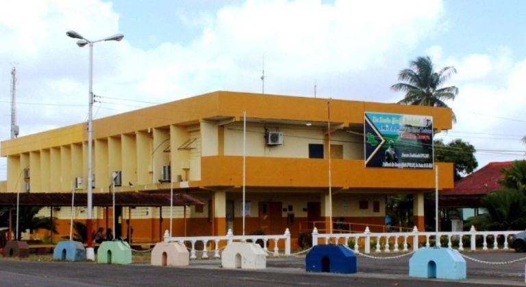

Deporte en la UTDFT
Reseña Histórica

La univesidad territorial deltaica Francisco Tamayo se inaugura el 22 de septiembre de 1989 con Abraham Gómez como director, Manuel Aristimuño como subdirector académico y Celestino Gómez como subdirector administrativo. Se da inicio a las actividades académicas el 25 de septiembre de1989 que duraron ocho semanas, y permitió ampliar los conocimientos de los bachilleres en las áreas de biología, física, matemática, lengua y comunicación entre otras.
El primer semestre comenzó el 08 de enero de 1990, con una matrícula de 869 alumnos inscritos en las carreras de administración, con dos menciones; Empresas y Recursos Humanos, Turismo, igualmente con dos menciones; Hotelería y Servicios Turísticos, Acuicultura, Fitotecnia y Zootecnia. A partir del año 1991 la matricula evoluciona de manera progresiva, hasta el año 1994, donde alcanza un nivel de 1261 estudiantes. Durante esos años se mantienen las misma carreras, el mercado laboral comienza a saturase y hay una breve disminución matricular hasta el lapso, cuando se comienza a hacer el estudio para ofertar nuevas carreras.
En 1999 bajo la conducción de la Dra. María Egilda Castellanos, Viceministra de Educación Superior del Ministerio de Educación Cultura y Deporte, aparece por primera vez en nuestro país, las Políticas para la Educación Superior Tales políticas buscan crear un nuevo sistema de educación universitaria para mejorar la equidad en el acceso y prosecución de los estudiantes; elevar la calidad y eficiencia de las instituciones.
Carreras que han sido aperturadas en la institución autorizadas por el Ministerio del Poder Popular para la Educación Universitaria desde su creación, según gacetas oficiales y resoluciones. CARRERA MENCIÓN Gaceta Fecha Resolución Oficial Gaceta CONSTRUCCIÓN CIVIL /04/2000 EDUCACION INTEGRAL /04/2000 EDUCACION FISICA Y DEPORTE /04/2000 TURISMO /04/2000 ADMINISTRACIÓN - Contaduría Pública - Fiscal Y /04/2000 Tributaria TECNOLOGÍA AGROPECUARIA - Producción Vegetal - Producción Animal /04/2000 PNF en Agroalimentación /10/2008 PNF en Administración /10/2008 PNF en Informática /10/2008 PNF en Construcción Civil /10/2008 PNF en Fisioterapia /10/2012 PNF en Terapia Ocupacional /10/2012 PNF en Turismo /10/2012 PNF en Enfermería Integral Comunitaria PNF en Contaduria Pública /08/ /09/2011
Mision
La direccion de deporte tiene como mision fomentar a los estudiantes atletas a desarrollar y pulir sus habilidades deportivas para que puedan desenvolverse en cada campo deportivo donde se presente la oportunidad de jugar profesionalmente, con una preparación integral adaptada a los cambios que vive la nación, bajo una concepción humanista, critica transformadora e interdisciplinaria capaz de aportar soluciones productivas a través de proyectos de aprendizaje que beneficien a todo el colectivo.
Vision
Nuestra vision es lograr el desarrollo eco-biopsicosocial del atleta, a través de la formación integral, con sentido de pertenencia de la cultura, ética, moral y socialista, tendiente a mejorar la calidad de vida de la población, con un pensamiento basado en los principios de justicia, democracia participativa y corresponsable con la sociedad venezolana.